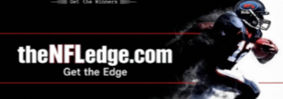

Get the Winners. Get the Edge.
Free, no-nonsense NFL picks and computer-generated score projections from Greggy the Greek's PanaGeoTech formula throughout the football season.
Home · All archives · Disclaimer
Classic NBA Edge
Explore recovered and reconstructed classic issues, records, and alternate versions preserved from the NBA Edge vault.
The 2013 season archive reports 77.08% winners. Explore the recovered and reconstructed issues rescued from the classic NBA Edge vault.
ATS means against the spread. Classic picks were curated from computer projections; today's NBA Edge publishes the computer's projections directly.

Free, no-nonsense NFL picks and computer-generated score projections from Greggy the Greek's PanaGeoTech formula throughout the football season.